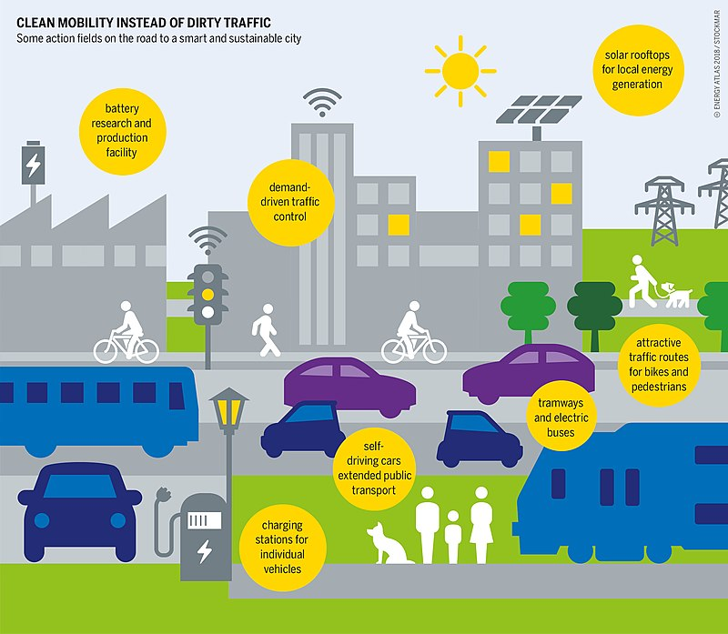

blockchain
HISTORIA

Blockchain.com fue lanzado en agosto de 2011 y fue fundado por Ben Reeves un miembro del equipo fundador de la bolsa de criptomonedas Coinbase. Reeves tenía una opinión diferente sobre el futuro de Coinbase, por lo que dejó Coinbase para fundar Blockchain.com,1 que proporciona datos sobre transacciones recientes, bloques minados en la blockchain de bitcoin, gráficos sobre la economía de bitcoin y estadísticas y recursos para desarrolladores.
En febrero de 2014, Apple Inc. retiró la aplicación Blockchain.com de la App Store de iOS, lo que provocó una dura respuesta de la comunidad Blockchain junto con una protesta pública en la comunidad bitcoin, más notablemente dentro de la comunidad Reddit.2 En julio de 2014, Apple restableció la aplicación Blockchain.com. 2
En octubre de 2014, Blockchain.com cerró una ronda de financiación de 30,5 millones de dólares de Lightspeed Venture Partners y Mosaic Ventures, que fue la mayor ronda de financiación en el sector de la moneda digital en ese momento.3
En julio de 2019, Blockchain.com lanzó su intercambio de criptodivisas.4 En el mes de septiembre de 2020, la compañía se unió a la Coalition for App Fairness, que reclama una negociación por mejores condiciones para la inclusión de las aplicaciones (apps) en las app stores.5
Función
Blockchain nos sirve para conocer las ventajas de las nuevas tecnologías, se unen para permitir un registro seguro, descentralizado, sincronizado y distribuido de las operaciones digitales, sin la necesidad de terceros. Cada uno de estos bloques está protegido y vinculado entre sí, permitiendo la participación de usuarios determinados, así la red de nodos (computadores conectados a la red) autoriza un consenso de alguna actualización en la Blockchain.
Cuando es aprobado y tiene una validez de la operación, el dinero se mueve y el bloque será añadido a la cadena, generando un registro inmutable y transparente. En distintas palabras, Blockchain trabaja como una base de datos compartida y actualizada, lo que facilita los cambias activos. 6